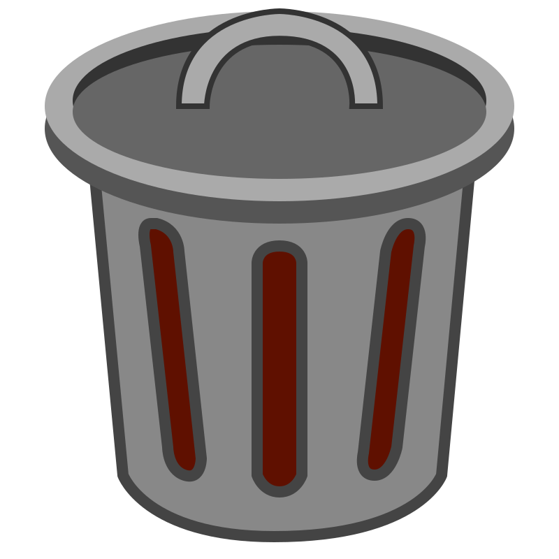

Gestor
‹
Tableros
Crear
Líneas
Fondo
Papelera
Nuevo Tablero
Estilos de Conexión
Color
Trazado
Fluido
Recto
Arco
Cuadrícula
Grosor
Punta
Flecha 1
Flecha 2
Flecha 3
Círculo
Cuadrado
Fondos del Tablero
Aplicar a:
Tablero
Notas
Fondo por Defecto
Notas Eliminadas
Vaciar Papelera
›
Arrastra una nota
+
100%
-
⛶

Duplicar Nota
Bloquear Nota
Eliminar Nota